ソフトウェアネットワーク演習Ⅱ
アルゴリズム
9月27日 28日 10月7日
scratchを使用して簡単なゲームを作成した
製作手順
製作する順序としては、まずはアニメーションをつける動物を挿入する
その次にスクラッチの動作のボックスから自分が使いたいものを選び入れる
自分の場合は基本的に4種類の動作ある。画像で見てほしいのですが
モブ
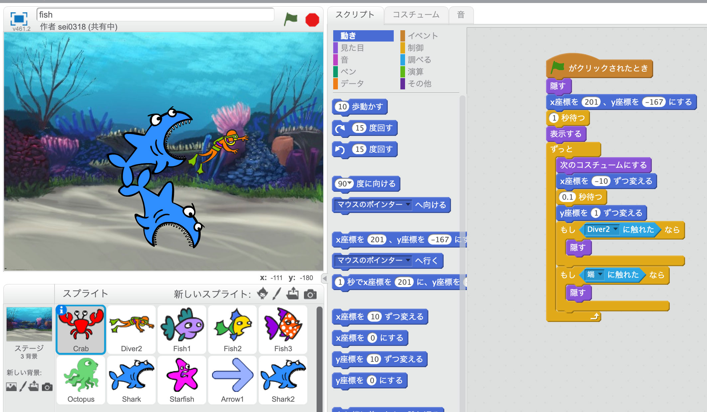
サメ
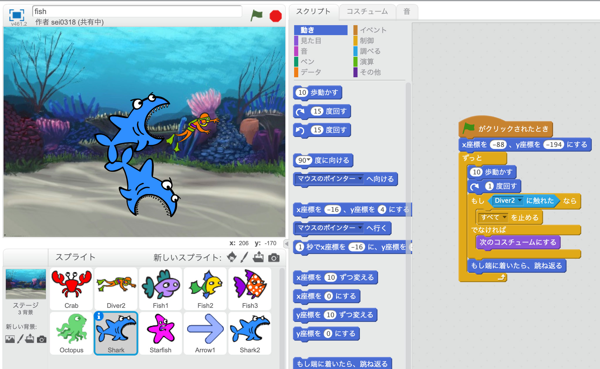
ダイバー
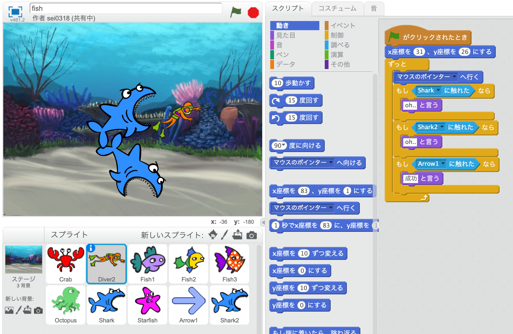
矢印
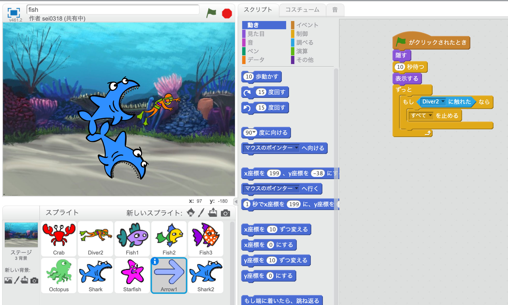
それぞれを一つ一つ時間差で出現するようにした
ダイバーはマウスの動きに連動させてサメに当たったらゲームが止まるようにした
サメは進む角度を少しずつ傾くようにしてまた端に当たると反転するようにして
ランダムに動くようにした
クリエイティブコーディング
11月 8日 16日 21日
P5.jsを学ぶ
何をしたのか
まず、基本的なコードを学びその後に家紋などの作成
しかし、スクラッチよりも格段に難しく全然わからなかった
けれど、一応家紋の作成はすることができた
下のようなコードを書いた
function setup() {
createCanvas(600, 600);
}
function draw() {
background(255,255,255);
fill(0,0,0);
ellipse(250,250,400,400);
fill(255,255,255);
ellipse(250,250,300,300);
fill(0,0,0);
rect(219, 100, 50, 300);
rect(55,225,350,50);
}
モチーフ「轡」
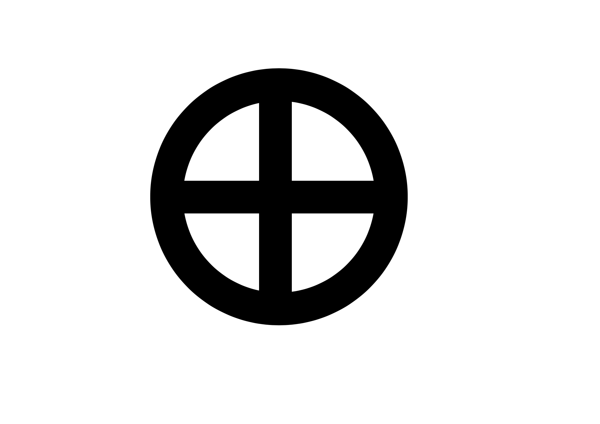
デジタルプロトタイピング
12月13日 14日 19日
学校の中に欲しいもの、また、あったらいいなと思う物
それのデザインをCAD「fusion360」で作る
自分が作ろうとしたもの
↓
丸テーブルと円形に連結可能なソファ
なぜこの二つにしようとしたのかというと
一般的な授業において
教員と学生の対話的授業を可能にするため
教師と生徒の距離を近くする
空気 雰囲気を作るための空間の作成
椅子 バリエーション
一つ目 普通の四角い椅子
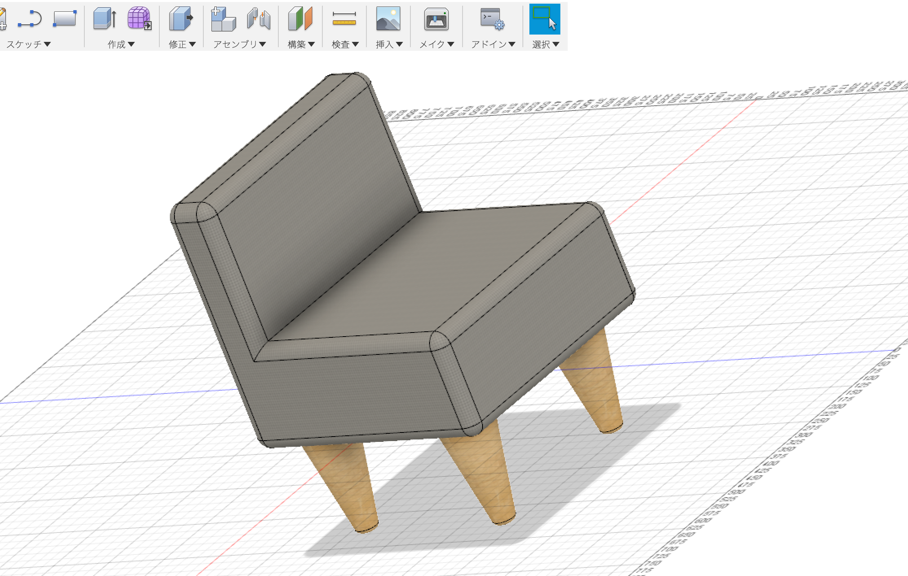
二つ目 取っ手をつけてみた
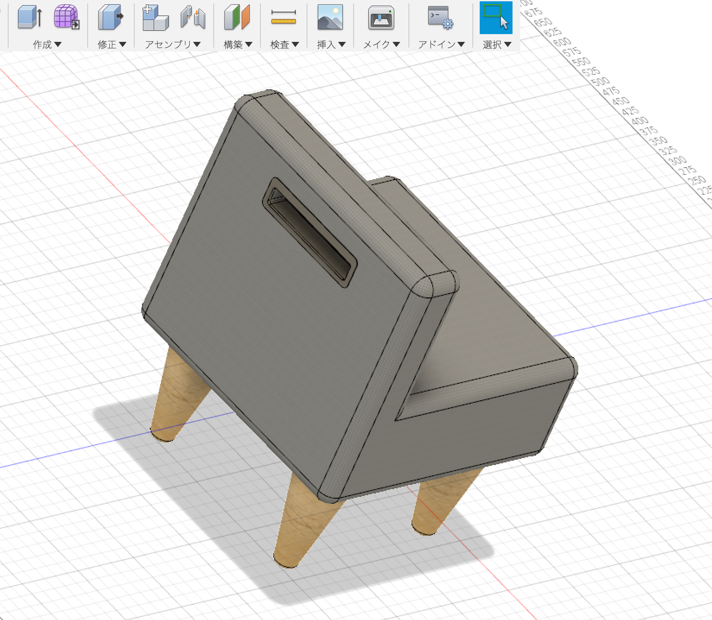
三つ目 繋げたら円形になるようにしてみた
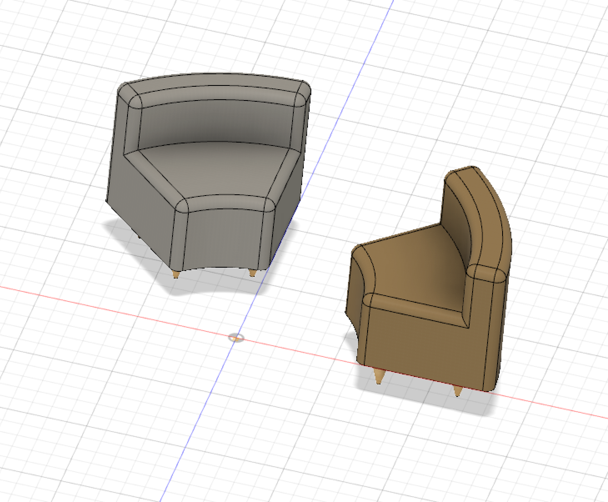
四つ目 少し一個を小さめにして複数作成 色のバリエーション 足を曲げるところを直線に
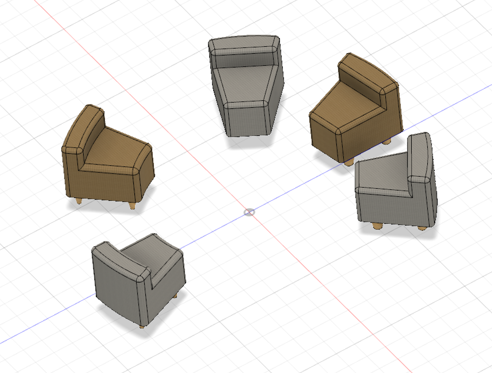
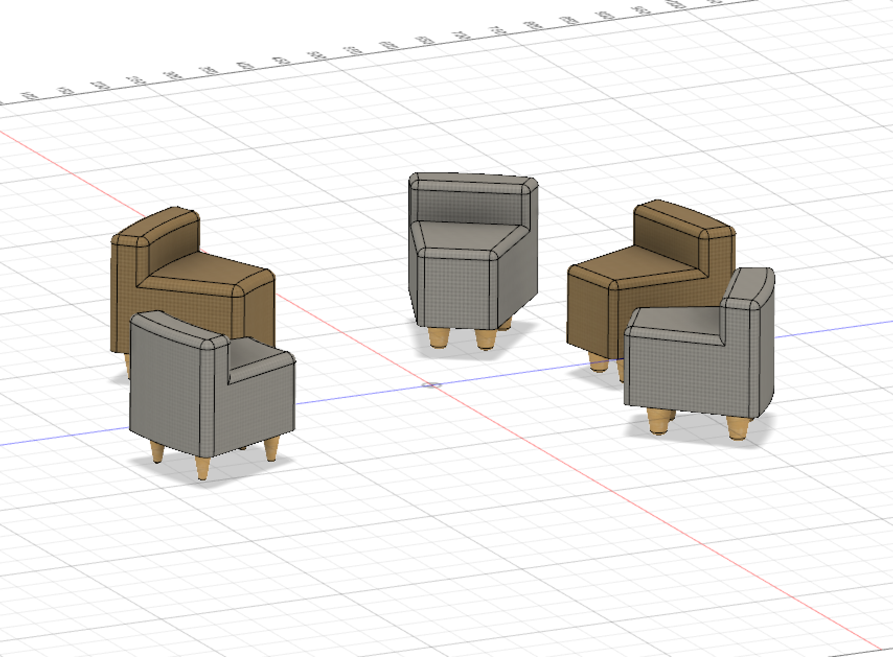
丸テーブル
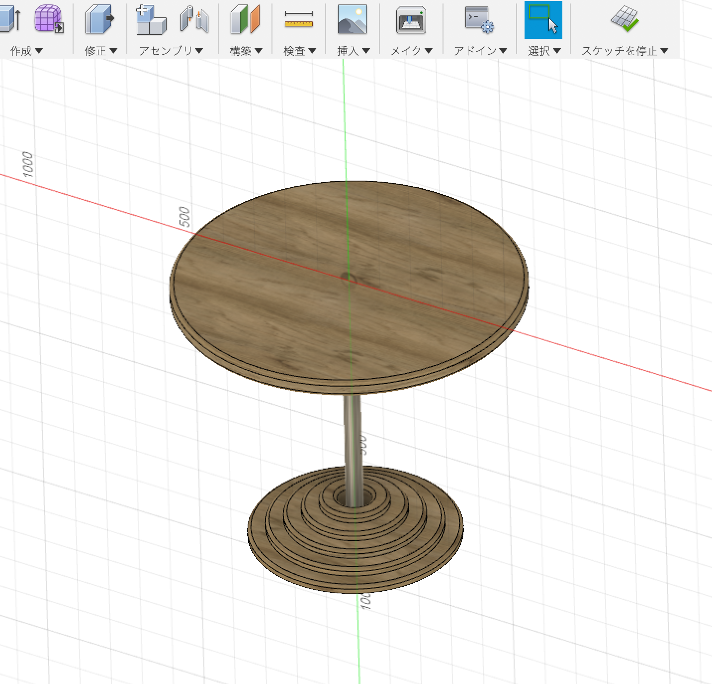
丸テーブルは土台も円が何個も重なってるようなデザイン
これらはすべて構造など全く考えずにただ形を作成した
一応ボディ分けをして外観マテリアルを変更した程度
なので、詳しく考えられるようにしたいと思った